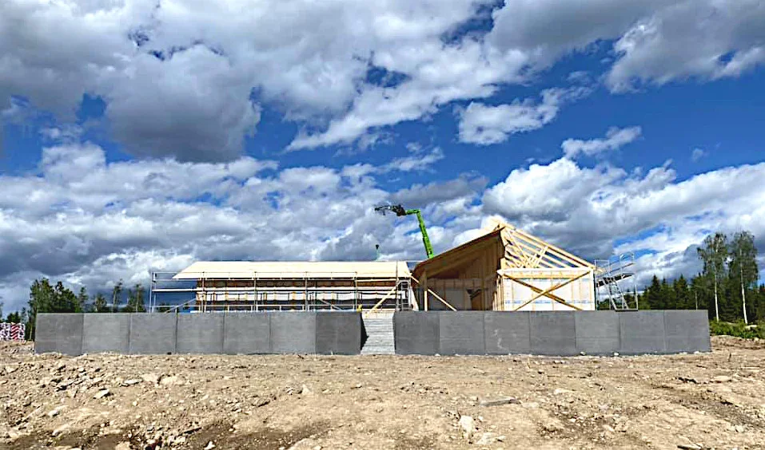

Nybyggnation
Från första skiss och projektering till en nyckelfärdig villa.
Läs merBygg & el i Söderbärke
Vi bygger nytt, bygger om och tar hand om elen. En byggpartner som håller ihop hela projektet.
Ett husbygge innebär många beslut. Vi ser till att de hänger ihop.
Från en mindre renovering till en ny villa. Med snickare, elektriker och en egen maskinpark kan vi ta hand om flera delar av ditt projekt och samordna resten.
Lär känna JP’sNybyggnation, renovering, el och markarbete. Välj det som passar dina planer.
Från första skiss och projektering till en nyckelfärdig villa.
Läs mer
Nya rum, nytt tak eller nya fönster. Vi tar hand om helheten.
Läs mer
Egna elektriker för både byggprojekt, service och fristående uppdrag.
Läs mer
Grävning, markarbete och lyft med vår egen maskinpark.
Läs merPlats för dina idéer
En tanke, en enkel skiss eller ett hus du ser framför dig. Våra arkitektkontakter hjälper dig att ta idén vidare.
Den första ritningen och en ändring ingår när du väljer att bygga med oss. Väljer du att inte gå vidare faktureras ritningarna till självkostnadspris, och du äger dem.

Från en nybyggnation i Vad till Folkets Hus i Söderbärke och hotellinredning i Stockholm.

Vi finns i Söderbärke, mellan Ludvika och Fagersta, och arbetar för både privatpersoner och företag.
Vi tycker om att vara med tidigt, reda ut förutsättningarna och hitta lösningar som fungerar. Bygg och el är våra två verksamhetsområden. Tillsammans gör de det enklare att hålla ihop ditt projekt.
Mer om ossBerätta om din idé, så pratar vi om nästa steg.